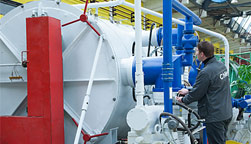
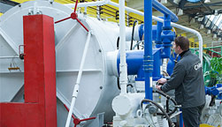

Порошковая металлургия
Состав оборудования цеха гранульной металлургии позволяет получить гранулы регламентированного фракционного состава из жаропрочных никелевых сплавов, титановых сплавов в защитных атмосферах.
Гранулы (порошки) изготавливаются по технологии PREP, характеризуются низким содержанием газов, отсутствием «сателлитов», большей насыпной массой, лучшей текучестью, отсутствием внутригранульной пористости. Это обеспечивает высокое качество изделий, изготавливаемых из гранул.
 

Подготовленные гранулы засыпаются в капсулы, герметизируются, подвергаются компактированию на газостате, последующей термической и механической обработке, испытаниям, контролю.
Особенностью технологии изготовления продукции из гранул в СМК является использование в качестве исходного материала электрода, полученного путем вакуумно-индукционной плавки с тонкой фильтрацией металла с последующим вакуумно-дуговым переплавом. Эта схема обеспечивает высокую чистоту металла, регламентируемый фракционный состав гранул, низкое содержание газов, стабильный химический состав гранул и, как следствие, высокий и стабильный комплекс свойств.
Помимо этого, технологическая оснащенность компании позволяет изготовить диски и другие детали из гранул по схеме «ГИП + деформация». Данная технология обеспечивает применение гранул регламентированного фракционного состава различных сплавов для формирования функционально-градиентной структуры и заданного комплекса свойств, что позволяет получить заготовки с индивидуальным набором характеристик в разных частях дисков в зависимости от условий работы диска.